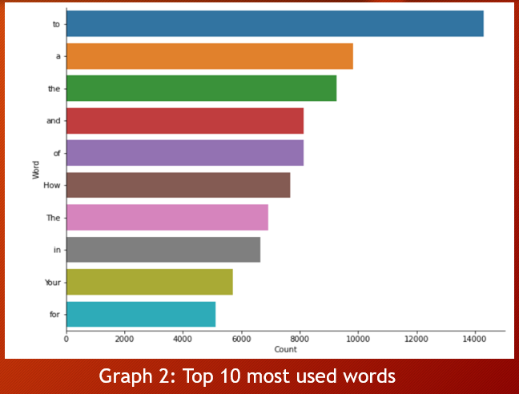
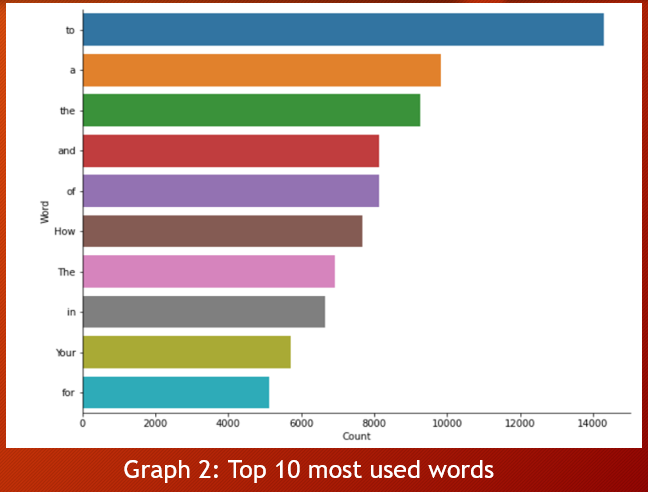

Utilizing Machine Learning Techniques to Predict Subsequent Words in Sentences
Ever wondered how predictive text works? The main aim of this project is to predict the subsequent
word using the n-gram language model.
An article about the project is available here!

Project Objective
Designed and deployed a deep learning model capable of predicting the next word in a sentence with high accuracy and low loss. The goal was to generate coherent, meaningful text and ensure strong generalization to unseen data. A user-friendly interface was also built to make predictions accessible and interactive.
Workflow Overview
- Data Collection & Preprocessing: Cleaned and structured raw text data, then created five datasets corresponding to different n-gram levels.
- Exploratory Data Analysis (EDA): Analyzed word distributions, sequence patterns, and token frequency to inform model design.
- Modeling: Trained five GRU-based RNN models — one for each n-gram level — using TensorFlow/Keras.
- Evaluation: Compared models based on accuracy and log loss. The best model achieved 99.61% accuracy and 0.0094 log loss.
- Deployment: Packaged the final model with a simple UI for real-time predictions.
Dataset Description

- For this project, we obtained our dataset from Kaggle.
- We used the Medium Articles Dataset, which is available at the following link: https://www.kaggle.com/datasets/dorianlazar/medium-articles-dataset.
Modelling Highlights
- Five dataset text files were generated using n-gram language models, which ranged from unigram to five-gram.
- These datasets were then employed to train five distinct GRU-based RNN models, with each model containing five hidden layers.

The 5 layers were as follows
- Embedding Layer: Converts input words into dense vectors of fixed size, capturing semantic relationships.
- Two GRU Layers: Five stacked Gated Recurrent Unit layers process the sequential data, capturing temporal dependencies and patterns in the text.
- Dense Output Layers: A fully connected layer with a softmax activation function to predict the next word from the vocabulary.
Screenshots & Visuals
Below is the demo video showcasing key features of the Next Word Prediction application:
Project Demo
 
